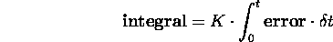
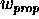
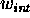
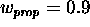
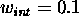
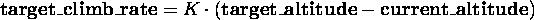

|
Last modified: 10/03/2003 Curtis L. Olson 
|
Flight Gear Autopilot: Altitude Hold Module
Curtis Olson
1. IntroductionWorking on scenery creation was becoming stressful and overwhelming. I needed to set it aside for a few days to let my mind regroup so I could mount a fresh attack. As a side diversion I decided to take a stab at writing an altitude hold module for the autopilot system and in the process hopefully learn a bit about control theory.
2. Control Theory 101Before I get too far into this section I should state clearly and up front that I am not a ``controls'' expert and have no formal training in this field. What I say here is said to the best of my knowledge. If anything here is mistaken or misleading, I'd appreciate being corrected. I'd like to credit my boss, Bob Hain, and my coworker, Rich Kaszeta, for explaining this basic theory to me, and answering my many questions. The altitude hold module I developed is an example of a PID controller. PID stands for proportional, integral, and derivative. These are three components to the control module that will take our input variable (error), and calculate the value of the output variable required to drive our error to zero. A PID needs an input variable, and an output variable. The input variable will be the error, or the difference between where we are, and where we want to be. The output variable is the position of our control surface. The proportional component of the PID drives the output variable in direct proportion to the input variable. If your system is such that the output variable is zero when the error is zero and things are mostly linear, you usually can get by with proportional control only. However, if you do not know in advance what the output variable will be when error is zero, you will need to add in a measure of integral control. The integral component drives the output based on the area under the curve if we graph our actual position vs. target position over time. The derivative component is something I haven't dealt with, but is used to drive you towards your target value more quickly. I'm told this must be used with caution since it can easily yield an unstable system if not tuned correctly. Typically you will take the output of each component of your PID and combine them in some proportion to produce your final output. The proportional component quickly stabilizes the system when used by itself, but the system will typically stabilize to an incorrect value. The integral component drives you towards the correct value over time, but you typically oscillate over and under your target and does not stabilize quickly. However, each of these provides something we want. When we combine them, they offset each others negatives while maintaining their desirable qualities yielding a system that does exactly what we want. It's actually pretty interesting and amazing when you think about it. the proportional control gives us stability, but it introduces an error into the system so we stabilize to the wrong value. The integral components will continue to increase as the sum of the errors over time increases. This pushes us back the direction we want to go. When the system stabilizes out, we find that the integral component precisely offsets the error introduced by the proportional control. The concepts are simple and the code to implement this is simple. I am still amazed at how such a simple arrangement can so effectively control a system.
3. Controlling Rate of ClimbBefore we try to maintain a specific altitude, we need to be able to control our rate of climb. Our PID controller does this through the use of proportional and integral components. We do not know in advance what elevator position will establish the desired rate of climb. In fact the precise elevator position could vary as external forces in our system change such as atmospheric density, throttle settings, aircraft weight, etc. Because an elevator position of zero will most likely not yield a zero rate of climb, we will need to add in a measure of integral control to offset the error introduced by the proportional control. The input to our PID controller will be the difference (or error) between our current rate of climb and our target rate of climb. The output will be the position of the elevator needed to drive us towards the target rate of climb. The proportional component simply sets the elevator position in direct proportion to our error.
The integral component sets the elevator position based on the sum of these errors over time. For a time, t 
I do nothing with the derivative component so it is always zero and can be ignored. The output variable is just a combination of the proportional and integral components.  and  are weighting values. This allows you to control the contribution of each component to your final output variable. In this case I found that  and  seemed to work quite well. Too much integral control and your system won't stabilize. Too little integral control and your system takes excessively long to stabilize.
We are trying to control rate of climb with elevator position, so the output of the above formula is our elevator position. Using this formula to set a new elevator position each iteration quickly drives our climb rate to the desired value.
4. Controlling AltitudeNow that we have our rate of climb under control, it is a simple matter to leverage this ability to control our absolute altitude. The input to our altitude PID controller is the difference (error) between our current altitude and our goal altitude. The output is the rate of climb needed to drive our altitude error to zero. Clearly, our climb rate will be zero when we stabilize on the target altitude. Because our output variable will be zero when our error is zero, we can get by with only a proportional control component. All we need to do is calculate a desired rate of climb that is proportional to how far away we are from the target altitude. This is a simple proportional altitude controller that sits on top of our slightly more complicated rate of climb controller.

Thus we use the difference in altitude to determine a climb rate and we use the desired climb rate to determine elevator position.
5. Parameter TuningI've explained the basics, but there is one more thing that is important to mention. None of the above theory and math is going to do you a bit of good for controlling your system if all your parameters are out of whack. In fact, parameter tuning is often the trickiest part of the whole process. Expect to spend a good chunk of your time tweaking function parameters to fine tune the behavior and effectiveness of your controller.
About this document ...
Flight Gear Autopilot: This document was generated using the LaTeX2HTML translator Version 96.1 (Feb 5, 1996) Copyright © 1993, 1994, 1995, 1996, Nikos Drakos, Computer Based Learning Unit, University of Leeds. The command line arguments were: The translation was initiated by Curtis L. Olson on Thu Oct 1 21:40:01 CDT 1998 Curtis L. Olson Thu Oct 1 21:40:01 CDT 1998 |
|
|
|
Last modified: 10/03/2003 Curtis L. Olson
|